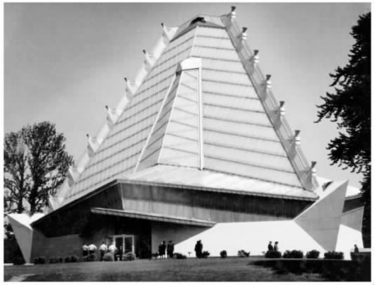

前几章，我们谈及了犹太教的不同教派［denominations，他们不喜欢被称做“宗派”（sects）］，比如正统派和改革派。为什么会存在这种分歧？分歧是如何产生的？难道没有一个“纯正、真实的”犹太教吗？摩西数千年前从西奈山上受上帝启示而带下来的那个宗教呢？要回答这些问题，必须回溯一段历史。
遗憾的是，我们无法回到某种“纯正、真实的律法”，也就是摩西得自上帝并流传下来的那部律法。犹太教和基督教传统都相信曾经有这么一部律法，犹太教传统认为，这种律法曾由拉比保存。说到底，这是一个信仰的问题。没有人能确定这样一部律法的经文，历史学家也无法明确告诉我们，完整统一的犹太教何时被所有犹太人毫无保留地接受。本书第二章探讨了犹太教与基督教的分裂，正如我们从中看到的，甚至在公元1世纪初，犹太教就有几个派别并存，每个派别都声称自己拥有真正的律法。转而，基督教也有过类似的声明，认为耶稣“履行”了律法，基督教徒才是“真正的以色列人”。
在中世纪即那个“信仰的时代”，人们信奉相同的教义、遵从相同的教规，情况又如何呢？对中世纪持有这样的观点是天真的。中世纪社会是专制而又压抑的；如果你持有不同于当局的观点，就要保持沉默。如果你不能保持沉默，起码要小心谨慎；要用神秘的语言掩饰你的观点，或者借助于“真正的、隐秘的传统”，比如“隐居传统”。表象之下，是比通常设想的更多的质疑。成形于中世纪，并在中世纪兴盛一时的唯一的犹太教派就是圣经派（不用说，圣经派信徒把“拉比派”犹太教当成一个“宗派”，而把自己的信仰当做真正的原初的犹太教）。现在，虽然许多背离主流教派的分支已销声匿迹，但凭事后之明见，还是可以分辨出它们的发展轨迹。
西方基督教世界中，罗马教会统治着精神领域，并且乐于动用“世俗的力量”，即动用世俗的权力机关和军队来保障宗教教义与实践的统一。罗马教会界定何为“异端邪说”，严酷地予以压制，比如，教皇英诺森三世发动十字军东征，残酷地镇压了法国阿尔比教派，使法国南部地区饱受蹂躏。
犹太教徒没有教皇，也没有军队，除极少数的例外情况，他们也不施加肉体惩罚和折磨，尽管这些残忍的手段在周围的世界司空见惯。但是，在面对自己所认为的异端邪说时，他们也高度警惕。犹太社区领袖行使权力，不是借助肉体镇压，而是实行坚壁策略，即发布革除教籍三十天并且可以顺延的禁绝令，在过去，这种策略除用于保证宗教律法得到遵守外，也用于实现民事和刑事正义。革除教籍会对社会和经济生活造成非常严重的后果，因为革除教籍的犹太人与宗教社区彻底割裂，不再属于任何社会组织；也无从谋生，在社会上无处安身。
这一社区规约（或压迫）制度随着隔都壁垒的摧毁，也就崩溃了。18世纪，生活于部分西方国家的大量犹太人开始争取到公民权，传统的犹太长老和拉比再也无法控制犹太民众的生活方式。对宗教的质疑以及背离主流教派的不同观点再也无法压制。犹太教派很快接受了公民自由、宗教宽容以及个人主义等启蒙运动的观点，普遍蔑视“迷信”活动。很多犹太人开始将传统的犹太社区及其机构视为蒙昧的、过时的、迷信的。
摩西·门德尔松（见第46页）终其一生都是一个严守教规的犹太教徒，他却按照启蒙主义观点激进地重新阐释了犹太教。包括门德尔松自己的孩子——门德尔松的孙子、著名作曲家费利克斯·门德尔松是由受过洗礼的父母生下的——在内的许多犹太人都接受了洗礼，这不是因为他们相信基督教比犹太教更符合真理、更优越，而是如另外一位受洗的犹太人、诗人海因里希·海涅所说的，因为这是通向“文明”和文明社会的门票。
公元18世纪结束之前，西欧各国，尤其是德国和法国的犹太人仍有三种选择。他们可以被同化——实际上就是接受洗礼，抛开犹太特征。他们可以自我封闭，毫无保留地坚守犹太传统，背对启蒙运动，这样的代价就是遭受社会疏离、嘲弄，并且很可能丧失来之不易的公民权。还有一个可能性就是，变革犹太教，清除其迷信的和过时的因素（毕竟，基督教徒同样在试图完善自己的宗教），从而使犹太教“现代化”，这样就可以不放弃犹太身份而获得社会认可。改革派犹太教就是源自这第三个选择。首先，改革派并不想成为一个孤立的团体。只有在他们所提出的变革方案遭到因循守旧的犹太教徒拒绝之后，改革派才以一个独特团体的面目出现，只有在此时，“正统派”这个标签才会牢牢地贴在反对激进变革的那些人身上。
公元19世纪早期，德国的宗教改革人士为重建公众的宗教崇拜礼仪，便增强其吸引力使之切合时代，剔除过时的环节，引入方言写成的祷告词，每周以方言布道，引入唱诗音乐和管风琴音乐，再增加新形式的仪式，比如基督教的坚振礼。法国人占领威斯特伐利亚为伊斯雷尔·雅各布森创造了一个机遇，他以上述做法为基础，于1810年在塞森建立了第一座改革派犹太教会堂，但在法国人撤出后，这种革新被迫终止。在柏林，正统派犹太教反对势力将改革派每周的仪式限定在雅各布森的家乡举行。这样，第一座永久性的改革派神殿便是汉堡的那一座，建于1818年。
汉堡最激烈的正统派反对势力所引起的争论，很快将一些神学问题明确化，这些神学问题正是宗教仪式改革引起意见分歧的原因所在。首要的神学问题是，《塔木德》以及拉比对它的阐述是否具备权威性。最初，改革人士努力诉诸传统的权威，想以此来证明自己的合法性，但态势很快明朗起来，他们不愿意按犹太教的传统规范和模式约束自己。比如，他们不再祈愿一个人格化的弥赛亚降临，并采取批判的历史的方式阅读包括《圣经》在内的犹太教经文。
从解决这类问题作出的种种努力中，演化出“渐进启示”这一神学概念。斯宾诺莎曾认为，古老的《圣经》律法（更不用说拉比律法）也许就是古代希伯来社会的律法，不再适用于现代社会，因为新道德伦理和精神价值观已经在现代社会“显现”。基督教绝对没有代替犹太教；准确说来，犹太教本身永远都是精神性的宗教，即使在现在也能证明启示的渐进性。随着渐进与演化被19世纪采纳为加以遵守的格言，改革派的这种理解方式得以加强。
改革派迅速传遍德国各地，远及奥地利、匈牙利、法国、丹麦，以及英国。1842年1月27日，西伦敦犹太会堂落成，它至今仍是兴盛的改革派中心，不过在当时，会堂的建立并没有明确的目的要发动一场旗帜鲜明的改革运动。1824年，在美国南卡罗来纳州的查尔斯顿建立了一个改革派的以色列社团；这个社团提倡修改礼拜仪式，而且还采纳了迈蒙尼德的“信仰原则十三条”（参见附录A），其中弥赛亚降临与肉体复生两条除外（怀疑论者曾将此与正式接受“十诫”相提并论，不过排除了两条似乎不合时宜的原则）。19世纪后期，在艾萨克·怀斯领导下，改革派成为美国犹太人社区中一股强大的力量。1875年，希伯来协和学院在俄亥俄州的辛辛那提市成立，时至今天，这所学院依然是改革派的精神家园。1869年《费城纲领》（全文见附录B）与1885年《匹兹堡纲领》，作为改革派经典的构成部分，同样是犹太教在美国所取得的成就。
19世纪接近尾声时，改革派的前提似乎与现实脱节了，这个前提是：社会与文化会越来越接近启蒙运动的普世理想，即包括犹太人在内的全人类都得经历持续的“弥赛亚救世的”过程。不仅有一种新的、世俗的种族排犹主义已植根于将福音与律法、新约与旧约、精神性与合法性相对立的观点，而且即便是自由派基督教神学家也固守这种二元对立的观点，他们认为基督教已经取代了犹太教。改革派的对策是更加强调犹太教的道德伦理与精神维度，赫尔曼·科恩对此有过明确的论述。科恩宣称犹太教是“伦理的一神教”，将弥赛亚救世观发展为对神始终如一的回应，发展为召唤世人承担道德升华这一永无止境的责任；救主即将降临的信仰使得对社会的不间断批判成为可能。在后来的著作中，科恩重新认识到安息日以及其他宗教制度的重要性和以色列人特殊的使命感。
改革派强调普世救赎论，强调“寄主”社会中的文化适应，所以他们不同情、甚至是敌视犹太复国运动。然而，甚至在以色列国建立之前，各种态度就一直摇摆不定，因为在“启蒙的”欧洲，普世救赎的理想受到民族主义冲突、顽固的排犹主义以及德国和其他国家的法西斯主义兴起等问题的侵蚀。与早期的改革派声明相比，1937年的《哥伦布纲领》表现出犹太教的普世救赎论和犹太特殊神恩论之间更广泛的平衡，并表现出“复兴巴勒斯坦”的决心。
1976年的《旧金山纲领》既反映出纳粹大屠杀对犹太民族的冲击，也反映了重建以色列国对犹太人的影响；纲领对人类的进步多了些怀疑，对上帝的观念少了些明朗，对家庭生活和宗教仪式多了些珍惜，对以色列国在犹太人生活中的地位更加看重，一种“立约神学”的观念正在改革派中形成。
礼拜仪式一直以来都是改革派的关注中心。近年来，对纳粹大屠杀、以色列复国的反思以及发展“宽容论”的需要，都深深地影响了祈祷书的内容。希伯来人已经重获复兴，现代心理学和人类学已经重新认识到宗教仪式和种族地位的重要性。
在1818年建立的汉堡犹太教神殿中，妇女面前已没有了隔墙，并且许多礼拜仪式的改革都是为了保护妇女的利益；不过，她们分坐在包厢内，不能被召来诵读《托拉》。20世纪所取得的重大进步，都是为了追求女性地位的平等。改革运动中第一位真正授任神职的女性，因而也是第一位女拉比，名叫雷吉娜·乔纳斯，任拉比一职不久便死于纳粹大屠杀；1935年12月27日，马克斯·迪内曼拉比代表德国自由拉比同盟向她颁布任命状。1950年代后期，美国拉比中央大会曾效法某些新教组织的做法，认可任命女性教职的原则，但直到1972年，才有一位女拉比萨莉·普里桑德获得辛辛那提的希伯来协和学院的任命。

图12 美国改革派犹太教的会堂像“圣殿”，尝试了现代建筑风格。图为贝丝沙洛姆会堂，位于费城的埃尔金斯公园，由弗兰克·劳埃德·赖特设计，1954年建成。
宗教改革，尤其是在美国，给传统犹太教律法中关于个人地位的内容带来了变革。很多改革派拉比都已准备好为异族婚姻，即只有一方是犹太人的婚姻做主婚人。1983年，美国拉比中央大会（改革派）宣布，父母中任何一方是犹太人，孩子就应该是犹太人，而非传统犹太教所规定的，必须母亲是犹太人，孩子才能被视为犹太人；这个变革是在提倡性别平等的努力中出现的；英国的犹太教自由运动也采用了美国拉比中央大会的规定。1990年代，改革派内部就对待“另类生活方式”的态度出现了很大的争议；有些人士认可了同性“婚姻”。
改革派在美国犹太教会堂中受到拥戴的比例约占35，英国占15，在其他国家，包括前苏联各国中所占比例更小。改革派在以色列很活跃，但缺乏正式的认可；有关异族通婚和改宗的观点，国家也没有完全认可。
“自由派”和“改革派”这两个词在大多数地方都可以互换使用，但英国的“自由派”是指莉莉·蒙塔古和克劳德·蒙蒂菲奥里于1909年前后创立的，其不同于改革派之处在于，它对传统和宗教仪式表现出更为激进的态度，而英国的改革派则更接近于保守派的立场。
“正统派”一词始用于1807年，后被德国的改革派用以命名其因循守旧的对手。但对这个词无法加以界定，只能说这个词涵盖了第一次实行宗教改革之后所有形式的传统犹太教；那么，保守派犹太教是不是也像公认的那样，成立组织机构致力于实施一些具体的方案，并在某种方式上也批判了传统犹太教呢？
确实，当代正统派也有派别林立的思潮。比如，它包括各种各样的哈西德教派，虽然哈西德教派本身在初创时期也被认为是离经叛道，是“改革分子”；它还包括哈西德教派的对立教派，这些教派的犹太教义在立陶宛风格的塔木德经学院中表现得最为深奥，也最具影响力，这些学院强调，深入细致地研究《塔木德》及其他拉比文献等律法文本很有意义。
另外一种包含进一步元素的思潮是“现代”正统派，或者说“温和的”正统派。这个派别遵从德国拉比萨姆森·拉斐尔·希尔施（1808—1888）的观点，试图在实践上将传统与一般文化综合起来。希尔施曾支持“《托拉》与本地文化相合”的观念。伊斯雷尔·撒兰特（1810—1883）所发动的穆萨尔运动旗帜鲜明地强调个人伦理与精神自律，这体现在经学院的精神导师或院长身上，他们的任务就是启发学生进行自我批评，提高精神修养。
另外，还有各种“地域”特色在不以激进方式改变其结构的前提下影响了犹太教的宗教实践。德系（此处是指北欧）犹太人与西班牙系（此处是指南欧、北非以及中东）犹太人都有独具特色的习俗，通常扎根于当地文化，它们为当代正统派增加了多样性。这些习俗之间偶尔会产生社会摩擦；比如，在以色列，西班牙系的犹太教领导人有时会抱怨，认为德系犹太人有进入政府机关工作的特权。这种争端是文化性的，而不是宗教性的。
尽管存在这种多样性，正统派领导人还是试图界定正统的犹太教，或者按照他们偏好的说法，“真正的”或“《托拉》为真的”犹太教。一种界定是强调，正统派犹太教徒把哈拉卡（犹太律法）当做束缚。另一种是强调信仰在西奈山得自神启的《托拉》，这是正统派犹太教最鲜明的特征。这样的做法存在很大的问题。首先，按照教义界定犹太教，这本身就偏离了传统，即使已有先例存在，比如在迈蒙尼德的著述中。不幸的是，该学说未能按当下的研究成果予以重新阐释。正统派犹太教，如果按照淳朴的中世纪形式对其加以理解，就会被大部分自称为正统派的人抛弃；如果以其他方式理解，许多非正统派的犹太人就会说，他们也是信仰正统派的。
所以，更明智的做法可能是，不去尝试界定正统派，只列举出自视为正统派的组织，并且指出，那些组织的成员自己对忠诚对象可能有非常灵活的解释。
在以色列，正统派是官方唯一认可的犹太教派别，它允许拉比绝对掌控婚姻规范，并对犹太人的身份有决定权，尽管近年来已逐渐承认非正统派的婚姻。从世界范围来看，除北美洲外，大多数信奉犹太教的犹太人名义上都是正统派，即便在个人层面上他们的信仰或者宗教实践可能更接近于改革派。
尽管以色列大拉比院、欧洲拉比公会、美国拉比理事会以及其他类似团体都很活跃、很有影响，正统派却并没有一个总体的指导思想。关于哈拉卡部分的抉择，深受独立的“精通《托拉》的贤哲”影响，这些贤哲的学养和虔诚受到公认。抉择范围很广，从宗教仪式问题到战争与和平的行动，从医德和民事纠纷到妇女地位；抉择的前提依据是，《托拉》中的律法源自于上帝，永远行之有效，每个年代都应由“精通《托拉》的贤哲”加以阐释（具体参阅第九章）。
如果说德国人撒迦利亚·弗兰克尔（1801—1875）是保守派犹太教的思想之父，那么，打造了这场运动的人，正是美国犹太神学院的所罗门·舍希特尔（1850—1915）。保守派犹太教徒将哈拉卡放在中心位置，但他们比正统派更愿意按照不断变化的社会和经济环境修正其宗教条文，他们坚称，犹太教在生死攸关的时期积极主动地与文化环境进行了互动，同时保留了犹太教基本的精神特质。对于圣经文献及其他原始文献的构成问题，他们接受现代历史批评的结论。
1983年，多数人投票支持对女性委以神职，多名担任要职的拉比认为，这有违哈拉卡的限定；但最终，他们还是改变主张，成立了“传统犹太教联盟”。
保守派犹太教在美国尤为强大，可能是世界上最大的单个犹太教派别。在以色列和英国（在这两个国家，保守派以它的希伯来文名称“玛索蒂”而为人所知），保守派只是最近才发展起来，但它吸引了人数众多的追随者。这个教派在其他地方也有进展，不过，只是在北美洲，它在犹太会堂中获得了三分之一教众的忠诚。
重建派以莫迪凯·卡普兰（1881—1983）的哲学思想为基础，有1968年创办的重建派拉比神学院做后盾，主张按照当代思潮和社会状况重新评价犹太教，包括重新评价上帝、以色列和《托拉》等基本概念以及犹太会堂等宗教机构。重建派通过联谊会吸引人积极参与，开展工作。联谊会中，拉比只是广有智谋的个人，不是领导，所有决定都经一致同意才作出。这场运动伊始，妇女便被赋予平等的地位。自1968年以降，父母任何一方是犹太人，子女就被视为犹太人。重建派组织在美国和以色列以外的国家为数不多，其思想却对其他犹太教思潮产生了巨大的影响。